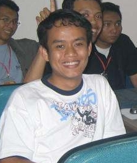
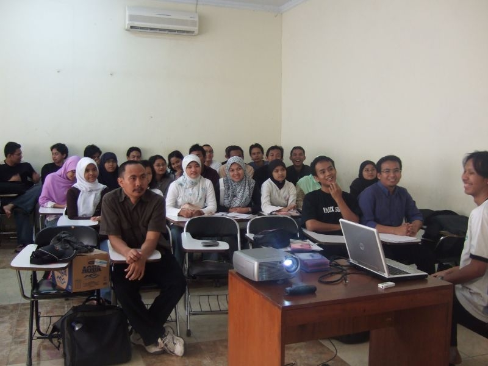
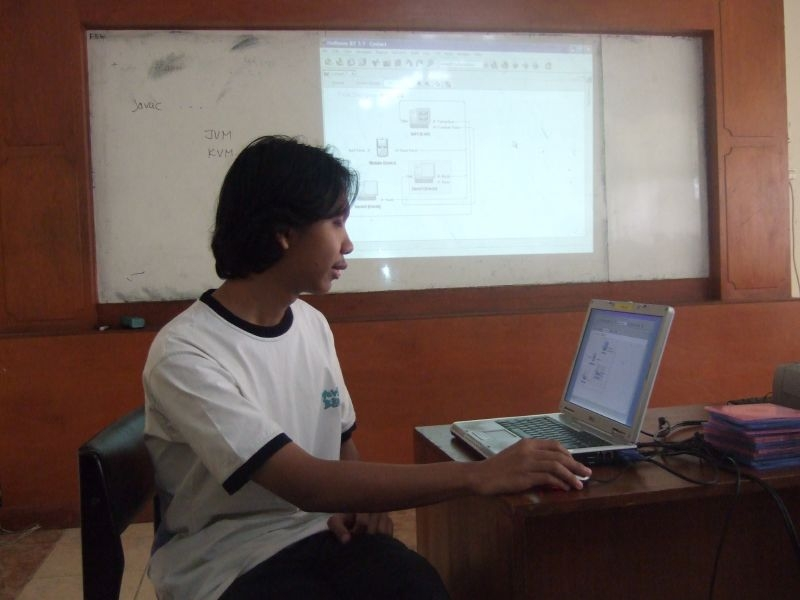

Introducing NUG Indonesia aka "NECTAR"
There's a new NetBeans Users Group in the NetBeans community: NUG
Indonesia!
Founded by Sun Employee Eko Budhi Suprasetiawan in 2006, NUG
Indonesia aka NECTAR (learn more about this name below) is a 298-member
code-sharing force now led by Ifnu Bima, an enterprising Computer
Science student and Java programmer who alerted us in early March to the
group's existence.
Like many ardent enthusiasts of the NetBeans IDE and Platform, our
new fans in Indonesia can't get enough of the fact that NetBeans is
easy to use, gets them started on their projects without any fussy
installing or configuring needed, and actually makes working in Java a
breeze and learning Java fun.
NUG Indonesia is a welcome addition to the NetBeans community, and
we are pleased to profile the group and its leader, Ifnu Bima.
Welcome to the NetBeans Community! Please tell us about yourself.
My name is Ifnu Bima. I'm the leader of NetBeans Users Group
Indonesia, also known
as NECTAR. I'm a Java programmer—mostly working on Java desktop
application using Swing and the NetBeans Platform; and an
undergraduate student in Computer Science at Bogor Institute of Agriculture,
and currently trying to finish my final assignment to get
my degree.
I am also a Java trainer and I have done some Java desktop
training
using the NetBeans GUI Builder. (The response has been very good.
People are starting to realize that developing Java desktop application
with NetBeans is really productive. Developers from other platforms are
starting to migrate to Java.)
Finally, I blog about
Java in Indonesian.
How did you discover NetBeans?
My first introduction to NetBeans happened in 2005 at a Sun Developer's
Day held in Jakarta. It was a huge event
because it was also to celebrate 10 years of Java. I received a
NetBeans 5.0 CD, and from that point I started to use NetBeans to learn
Java.
At first, I wasn't really attracted to NetBeans because I knew nothing
about it. I was even still an Eclipse user for about a year after I
received the NetBeans CD. But in November 2006, I attended another Sun
Developer's Day in Jakarta, and at this event I witnessed presentations
about NetBeans 5.5 Beta 2.
I was impressed with the many astonishing features of the IDE such as
the NetBeans GUI Builder and the Mobility Pack. From that point, I
started to explore NetBeans. It didn't take me too long to switch to
NetBeans and forget about Eclipse. My main reason was Matisse. I do a
lot of Swing component work, and Matisse suited me perfectly. Now I
work extensively in the NetBeans environment and have never looked back.
Also, after Java adopted the GPL license, I put my faith 100% in Java.
There is no ecosystem quite like the Java community.
NUG Indonesia is a new group. How did it get started?
It was started in mid-2006 by Eko Budhi Suprasetiawan, a Sun employee.
But for about three months it was a one-member mailing list until Eko
introduced it at a JUG Indonesia event in November. People, including
me, began to pay attention to it. I was member #7.
In January 2007, Eko, me and my friend Hadikusuma Wahab
hosted the
first meeting. It was a success. We had an enthusiastic crowd; the
presentations were perfect. Straight after this meeting, our membership
more than doubled.
Since then I have devoted most of my free time to organizing the group,
hosting the monthly meetings and collecting learning resources to be
compiled into our own “NetBeans CD”. Hadikusuma and I have also been
able to persuade our alma mater to support our monthly meetings by
providing a classroom and a projector.
The group is also known as NECTAR. What does this stand for?
NECTAR stands for “NetBeans Code Test And Release” and is the name of
our monthly meetings. It reflects our manifesto, which is that we don't
merely share general knowledge or just gather for meetings, but that we
aim to share code to inspire others to learn how to create solutions
using NetBeans.
But NECTAR also has two symbolic meanings. Nectar, the substance, is
important in agriculture, and we proposed the name in appreciation of
the support our group has received from the Bogor Institute of Agriculture.
Second, it reflects a reason why we're are trying to adopt
NetBeans locally. Agriculture is an important industry for Indonesia,
and we hope that NetBeans will not just be a tool for coding Java, but
will also be a tool we can use to transform the agriculture industry.
Why is NECTAR significant for you and other developers?
The open-source movement is in a big bang here in Indonesia due to an
initiative led by our Ministry of Research and Technology, which
launched a national campaign called Indonesia,
Go Open Source! or IGOS.
Recently, the Indonesia government signed an MoU (Memorandum of
Understanding) with Microsoft that stated that the Indonesia government
violated Microsoft's software license by using illegal copies of
Microsoft Windows and Microsoft Office in government PCs. Indonesia has
to pay almost $178 million as compensation to Microsoft. That's a huge
amount of money for a country like Indonesia.
The MoU hit us right on our foreheads. Government, the public sector
and educational organizations realized that they had to start migrating
all of their solution to open-source platforms. Java, of course, was the
easy choice. And NetBeans is positioned as an option for Indonesian
developers that are
starting to realize the importance of legal software.
What's the general opinion about NetBeans in Indonesia's developer
community?
Although NetBeans is an emerging Java IDE here, it has established
itself as a complete and easy to use IDE. When people try it, there's
not much reason to switch to another IDE. Java newbies find it
easy to start creating Java applications using NetBeans. In the past,
developing Java application, particularly Java desktop application was
never easy, and students tended to avoid Java because it was difficult
to
learn.
NetBeans makes it all look so simple and easy; new users can focus on
learning Java rather than on how to use the IDE, because with NetBeans
we don't need to learn about installing and configuring. One of the
NUG's aim is to help people learn Java and little-by-little erase the
word “difficult” as a reference to the language.
Personally, since investing the time to learn Java, it has changed my
live. I have gained an enormous experience, and through this NUG I want
to share that experience with others and hopefully make their lives
better too.
How would you describe the group's membership?
Currently, there are 298 members in the group. We have a mix of
students, Java newbies, and experienced developers.
Many of our members are college students who use NetBeans as their IDE
to learn Java. The intuitive and smart code completion is perfect to
help them memorize JDK API. NetBeans's capability to embed Javadoc API
and Javasource on a particular library helps them to understand the
logic behind that library.
Some of our members are senior Java developers with years of experience
in developing applications. They really love NetBeans's first-class
support for Java EE 5—creating EJB applications is now a lot easier
than before. Developing CRUD application using EJB3 and JSF is just a
matter of following a simple wizard. No boiler plate code and no
cryptic way of mapping object to relational data. Everything
looks explicit and clear.
We also have members who are university lecturers teaching OOP and
Java. One of them is Hendro Steven; he uses the NetBeans IDE to teach
Java. His students don't have any difficulties using NetBeans, so he
only needs to focus on teaching Java without the need to teach the
student how to use NetBeans properly.
What features do members like about the NetBeans IDE and Platform?
Most of our members have migrated from VB, FoxPro, Delphi or Clipper to
Java. They use NetBeans GUI Builder extensively to develop Java desktop
applications. Others members use the NetBeans Mobility Pack to develop
Java mobile applications, and the rest use NetBeans to develop web
applications.
NetBeans's Profiler is starting to gain more adoption. Profiling a Java
application is no trivial task, but that is before you try the NetBeans
Profiler, using it to find difficult bugs or bottle necks.
Some
of our member working extensively on the NetBeans platform.
Developing Swing applications from scratch is not easy, and in my
opinion, not a smart way to go. Lots of redundant work have to be done
every time we create such an application. For example, adding docking
feature, organizing menu and tool bars, creating a splash screen,
packaging and launcher, and so on. The NetBeans Platform makes it a lot
easier and we just have to concentrate on our main application's
functionality without worrying about the rest of it.
NetBeans's Java debugger is terrific. We can set break point, start our
application on debug mode and examine our application easily. Tight
integration between NetBeans and bundled Tomcat make it easy to debug
Java web application. “Apply code change” in the Java debugger is
a really slick feature that allows us to apply code change without
restarting the application server. It saves a reasonable amount of time
when debugging an application.
On top of all these, our members like the way NetBeans organizes its
main plugins. The tight integration between the packs is the strong
point of NetBeans. There's no nitty-gitty detail we have to do to
install or configure NetBeans. Just double click the installation and
we are ready to go!
Have your members seen the preview of NetBeans 6.0? What do they
think?
“Whoa!”
I have showed the NetBeans
6.0 Beans Binding Flash Demo created by
Roman Strobl on several occasions and people have been very
impressed.
For me, NetBeans 6.0 is really what I'm looking for. There is nothing I
can complain about in NetBeans 6.0. Everything looks great and neat.
Tons of new cool feature added to standard distribution of NetBeans
6.0. In this way, NetBeans will become a complete IDE to develop
solutions.
How active is NECTAR?
We've held five monthly meetings so far. Besides sharing knowledge
about NetBeans and Java, we have also tried to setup a group project;
unfortunately, the members who attend our meetings differ from
month-to-month, so creating a dedicated group to develop a project has
not been really feasible. But we will keep trying until we're ready.
What we really want to accomplish in these meetings is what we call
“capacity building”. That is, building groups of people with strong
Java knowledge, after which ideas can be generated and projects born.
For now, the group communicates mostly through the mailing list and
private chats. We don't have a group website or wiki yet, but we will try
to set it up in the near future.
What future plans does the group have?
We're still in the beginning stages and don't have any concrete major
event or projects ahead. Our plan this year is to establish the group
to have a decent level of activity, virtual and real. We're trying to
gain more members and increase daily posting to the mailing list.
For now, we're trying to share information about NetBeans by creating a
“NetBeans CD” and sharing it among our members; localizing NetBeans;
and some of our members intend to write books about NetBeans in
Indonesian language.
We love localization! How much of the NetBeans IDE or NetBeans.org
has been translated into Indonesian?
Two of our member, Ibrahim F. Burhan and Thomas Edwin Santosa are
localizing NetBeans into Indonesian language. Right now, the status
of translation is 100% complete for the NetBeans Platform. For the NetBeans
IDE, 16% or 155 parts of 924 have already been translated to Indonesian.
Perhaps a good project for the group would be to get the IDE translated
from 16% up to 100%?
Yes, that would be a great idea. I and Ibrahim have created two blog entries
that contain guidance for those who want to join us in translating the NetBeans
5.5 IDE into the Indonesian language. The translation process has been slow in
the past two months; we need more volunteers. The problem is that Ibrahim and
Thomas live in the different provinces, so we can't invite them to our monthly
meetings. If we are able to invite them and they have a presentation on how to
translate NetBeans I'm sure more people will join the Indonesian translation
team. For those who are interested, the blog entries I mentioned above can be
found here and here.
What about individual projects that members are working on?
One of our members, Tony Kohar, did a cool project called Sketsa. It's
an SVG editor which is quite popular and has received lots of awards.
He was also featured in a NetBeans
interview with Geertjan Wielenga.
I developed a NetBeans plugin called Intelligent
Tutoring System. It's
basically a software to teach you programming language. For now, it can
only teach you C language, but in the next six months I plan to add new
capabilities to teach Java language. I created a blog entry
to explain
what the plugin tries to do, but it's in Indonesian, not English.
Have you considered submitting the plugin to the NetBeans Plugin Portal?
For now, I'm not too confident to share it
because it's not a ready-to-use plugin. But my next version will be a
ready-to-use application with proper documentation that I'll try to
submit.
How can people contact the group or join?
You can join or contact NECTAR aka NUG Indonesia through our mailing
list:
NetBeans-indonesia@yahoogroups.com
Ifnu, thanks for a great interview. Please keep us informed about
NECTAR's activities. And best of luck with the group.
Thank you.